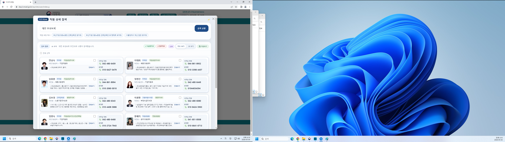

03. 고용노동부 AX Project 소개
기존 시스템 위에, 직원이 직접 쌓은 첫 AI
외부 솔루션 도입이 아닌 — 내부 인재의 자발적 Bottom-up AX
BEFORE
상황
이름 또는 전화번호 입력으로만 검색 가능 — 업무명·부서명 검색 불가
문제
담당자를 모를 때
전화·메신저 수소문
업무명으로 검색 시
검색 결과 없음
신규·타부서 직원
업무 연결 어려움
이름을 정확히 알아야만 찾을 수 있는 구조
AFTER · AI 직원검색

자연어 검색 결과 — 직원 카드·사진·연락처 즉시 표시
LOG 분석
누적 이용 건수
56.6만
오픈 2주 (04.21 기준)
고유 이용자
12,373명
평균 응답 0.53초
주요 검색 유형
부서·기관명 40%
직급·직명 27%
복합 자연어 20%
업무 키워드 13%